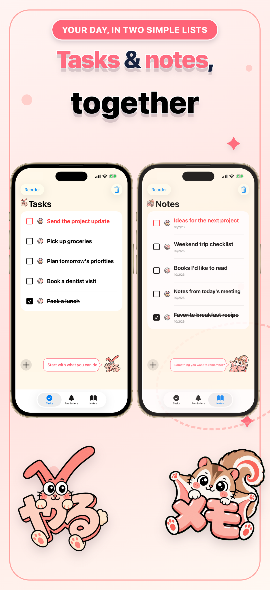
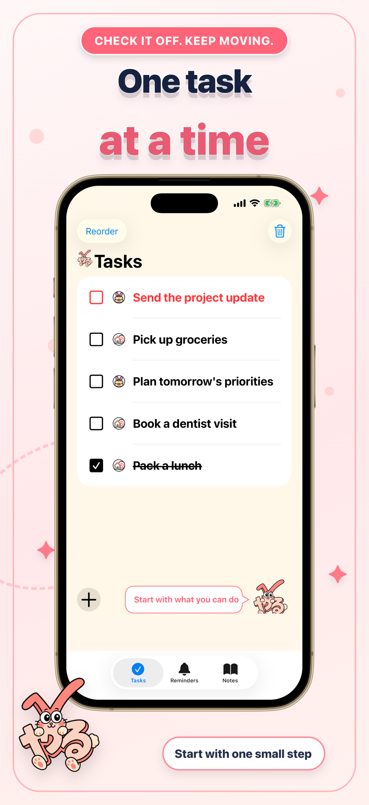
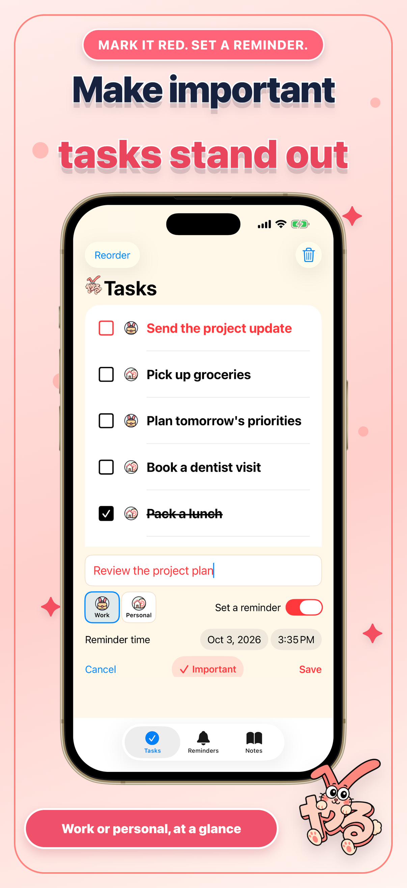
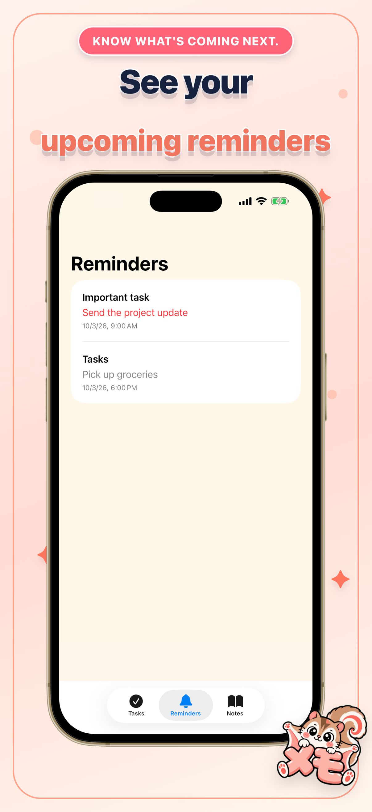
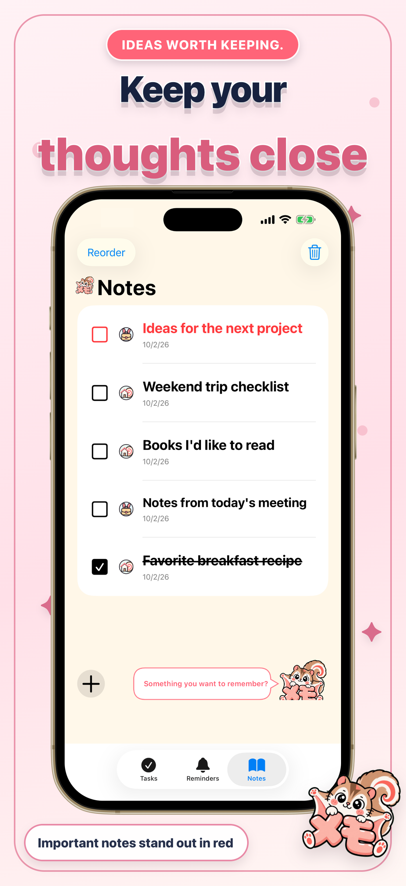

やることも、覚えておきたいことも。
タスクもメモも、ひとつに。
やるメモは、毎日のやることと大切なメモを、見やすいふたつのリストで管理できるiPhoneアプリです。

やるうさぎとメモんがも、
あなたの一歩をそっと応援します。

毎日の流れが、ひと目でわかる。
現行アプリの画面を使ったアートボードで、やるメモの使い心地をご紹介します。


シンプルだから、
続けやすい。
追加もチェックも、いつものリストの中で。やることとメモを行き来しながら、必要な情報を整えられます。

追加して、チェック
やることやメモをすぐに追加。終わったやることや覚えたメモはチェックできます。
大切なことを赤文字で
やることもメモも「重要にする」を選べます。重要な項目はリスト内で赤文字になります。
やることに通知を設定
追加するときに日時を選び、設定した通知は「通知一覧」で確認できます。
自分の順番に並べ替え
両方のリストで順番を変更でき、不要な項目や完了済みの項目を削除できます。
Yaru Memo
Tasks & notes,
one friendly place.
A little less to keep in your head.
Keep everyday tasks and things you want to remember in two simple lists. Mark what matters, set a task reminder, and take your day one small step at a time.
Yaru Bunny and Memonnga
are here to cheer you on.

Make room for the everyday.
A quick look at tasks, reminders, and notes in Yaru Memo.




Simple enough
for every day.
Two lists, a few useful tools, and friendly company. Keep work and personal items easy to recognize with category icons.
Add it. Check it off.
Add a task or note whenever you need to. Check off finished tasks and notes you no longer need.
Highlight what matters
Mark a task or note as important to show it in red. Important task notifications are labeled Important, too.
A reminder when you need it
Choose a date and time when you add a task, then review your scheduled reminders in the app.
Put your lists in your order
Reorder tasks and notes, or delete items you no longer need. Home Screen and Lock Screen widgets show your top unfinished tasks.
A little help, when you need it.
Find answers to common questions, or tell us about a problem or an idea for Yaru Memo.
Free to use, with ads. Requires iOS 17.6 or later. English app text is included in version 1.2. Your own tasks and notes are never automatically translated.
Privacy policy (Japanese)